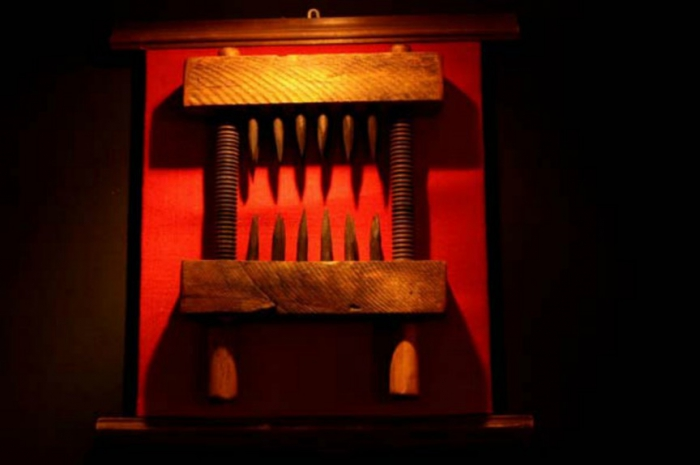
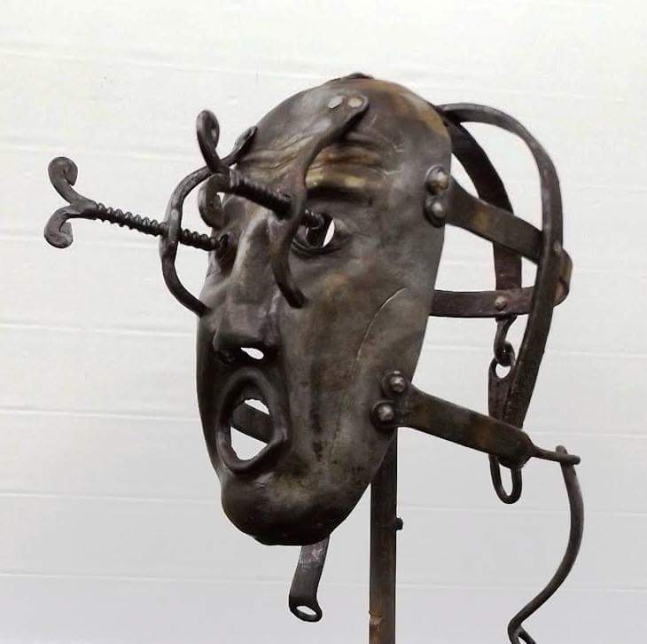
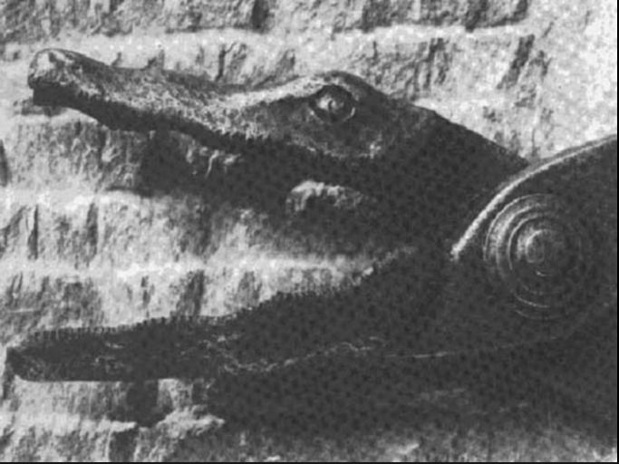
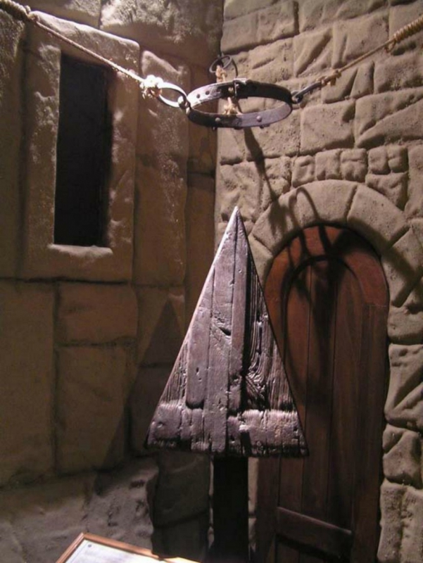

Kínzóeszközök a középkorból

Hüvelyikujj-csavar
A hüvelykujj-csavar olyan kínzóeszköz volt, amely megbénít, esetleg megrongál, de életben hagy, hogy elmondhassa társainak az ellenség hatalmát.
A középkor folyamán az uralkodók, a hadseregek és a vallási szervezetek minden szükséges eszközt alkalmaztak a hatalom fenntartásához. Ezen eszközök közé tartozott a gyanúsítottak kínzása a vallomások kinyerése érdekében. Az egyik ilyen kínzási módszer egy hüvelykujj-csavar volt, egy kicsi és egyszerű eszköz, amely lassan összezúzta mindkét hüvelykujját.
Ha ez nem lenne elég, néha kis méretű szegecsekkel és pengékkel is ellátták a szerkezetet.

Térdaprító
A fogakkal ellátott szerkezetet gyakran használta az inkvizíció is, és általában elég hatékonynak bizonyult.
A vashegyek a szorítás hatására a húsba és a csontba vájtak, így tették használhatatlanná az áldozat térdeit egy idő után.
A nevével ellentétben azért ügyesen alkalmazták csuklók és könyökök tönkrebaszására is.
Nem járt jól, aki kapott egy ilyen kezelést!

Boszorkánymaszk
Habár a boszorkánymaszk önmagában nem okozott halált, viselése a kevésbé okozott örömöt.
A XVI. századi Angliában és Skóciában terjedt el a használata, olyan nőket bűntettek vele, akiket boszorkánysággal vádoltak, ezzel pedig nyilvánosan megszégyenítették őket.
A vasálarcot egy vasból öntött sisakhoz rögzítették, ám lehetetlenség volt levenni. A maszk szájrészénél egy rövid, tüskés vasrúd lógott egyenesen viselőjének a szájába a nyelv fölé, így külön kihívást jelentett az evés, sőt még a beszéd is iszonyatos fájdalmat okozott.

Melltépő
A kedves nevű kis kínzóeszközt nőknél használták, főleg boszorkányokon, illetve hűtlen asszonyokon, akiknek néha még büntetésnek szabták ki, hogy a mell kitépését a gyerekeinek is végig kell nézniük.
Az előmelegített vaskarmokkal a melleket fogták közre, és szépen lassan letépték azokat.
Az áldozat nem mindig vérzett el a sérülésben, hanem sokszor egész hátralévő életét megcsonkítva kellett tengetnie. Tanulság: nem éri meg boszorkánynak lenni!

Kerékbe törés
A kerékbe törés egy főként a középkorban használt kivégzésnem volt.
A kínhalálra ítéltet rendszerint széttárt karral és lábbal, fekvő helyzetben a földön fekvő gerendákhoz (vagy létrához) kötözték, majd végtagjait egy nagy kerékkel összetörték úgy, hogy az elítélt élve maradjon, más esetben bottal tördelték el a kerék vagy a létra fokai mentén az elítélt végtagjait, miután ahhoz kötözték azokat. Néha azonban a mellét vagy a fejét is bezúzták, hogy megrövidítsék szenvedéseit. Az így összezúzott testet a kerék küllőihez kötözték és fölerősítették egy földbe ásott gerenda vagy karó tetejére. A kerékre olykor éles vaspengéket is szereltek. Némely kivégzettnek levágták a fejét is, majd gyakran arra a karóra tűzték, amelyre a testét tartó kereket is felhelyezték.
A keresztény vértanúk gyakori kivégzési módja volt, később általában gyilkosságért, rablásért és gyújtogatásért elítélteket törtek kerékbe.

Krokodil olló
Ez a szerkezet egy sűrűn fogazott, gyakran krokodil alakúra formált pengével rendelkező olló volt.
Igen könnyen lehetetett vele egy-egy ujjat eltávolítani, lényegében erősfeszítés nélkül, vagy a nemiszerveket megcsonkítani. Legtöbbször erre is használták, teljes végtagok eltávolítására inkább más módszerhez folyamodtak.
Kevés a rendelkezésre álló dokumentum, de a tudósok azt mondják, hogy csak kivételes esetben került elő ez a csonkítószerszám. Ezt a büntetést például a király merénylőin alkalmazták.

Fejprés
A fejprés az egyik legdurvább kínzó eszköz, amit valaha kitaláltak. Komoly használati utasítást azonban nem igényelt.
Az áldozat állát az alsó fémlapra kellett támasztani, majd satuba fogva az áldozat koponyáját, ripityára törték egy citromfacsaró működési elvéhez hasonlóan
Néhányan ezt is túlélték, azonban azok jártak ojbban, akik nem, mivel aki túlélte, a legkevesebb mellékhatás az volt, hogy megbolondult.

Júdásbölcső
A lofat egy középkori kínzóeszköz feltételezett neve.
A források kétféle eszközt említenek: egy karót és egy fából készült, háromoldalú, piramisszerű emelvényt, ami a Júdásszék, Júdásbölcső néven is ismert spanyol inkvizíciós eszközhöz hasonlít.
A piramis csúcsára ültetett áldozatot a bokáihoz csomózott kötél segítségével húzták lefelé, míg a végbele szét nem repedt. A kínzás általában nem volt halálos kimenetelű, de gyakran maradandó sérülést okozott. A karóbahúzás szintén a végbélen keresztül történt és ebbe a megkínzott bele is halt.